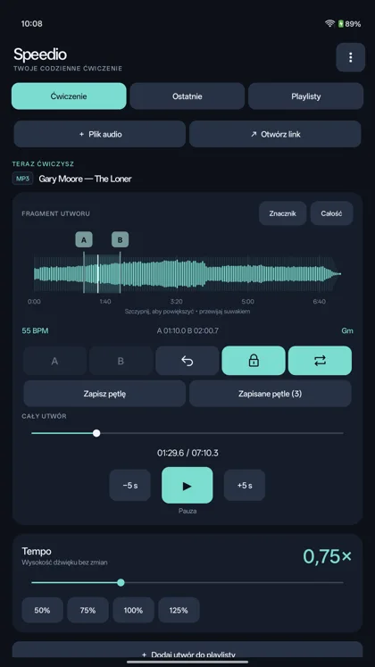
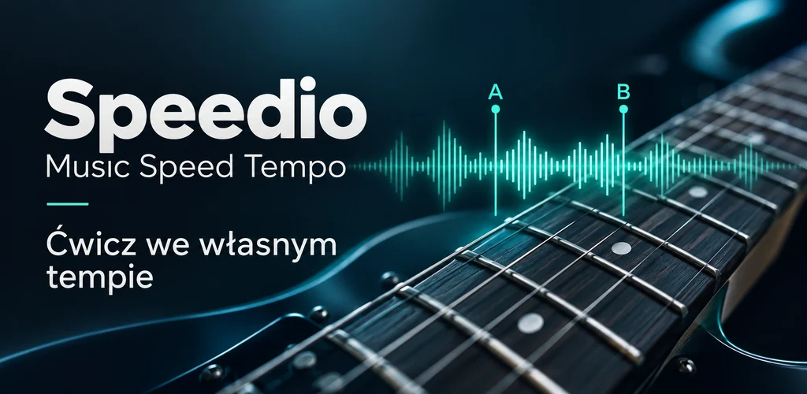

Ćwicz we własnym tempie.
Zwalniaj muzykę bez zmiany wysokości dźwięku. Speedio to odtwarzacz na Androida dla gitarzystów i innych instrumentalistów, którzy uczą się grać ze słuchu.


Od riffu do całej solówki
Ustaw punkty A i B, nazwij pętlę i wracaj do niej podczas kolejnych ćwiczeń. Dla lokalnych plików audio Speedio szacuje tempo (BPM) i tonację. Możesz też otwierać obsługiwane linki, w tym z YouTube, i układać własne playlisty.

Jak rozłożyć szybką solówkę na frazy
Otwórz nagranie i zwolnij trudny takt na tyle, żeby usłyszeć kolejność dźwięków. Wysokość dźwięku pozostaje taka sama, więc możesz grać razem z nagraniem w tym samym stroju. Kiedy kilka powtórzeń zabrzmi równo, zwiększ tempo i sprawdź, czy ostatnia nuta frazy nadal wypada w rytmie.
Jak wrócić do tego samego taktu
Rozsuń dwa palce na osi czasu, aby dokładniej ustawić początek i koniec pętli A–B. Zablokuj punkty, jeśli chcesz przewijać nagranie bez przesuwania granic. Zapisz fragment jako „Wejście solówki”. Następnym razem otwórz utwór z historii lub playlisty i wybierz zapisaną pętlę.